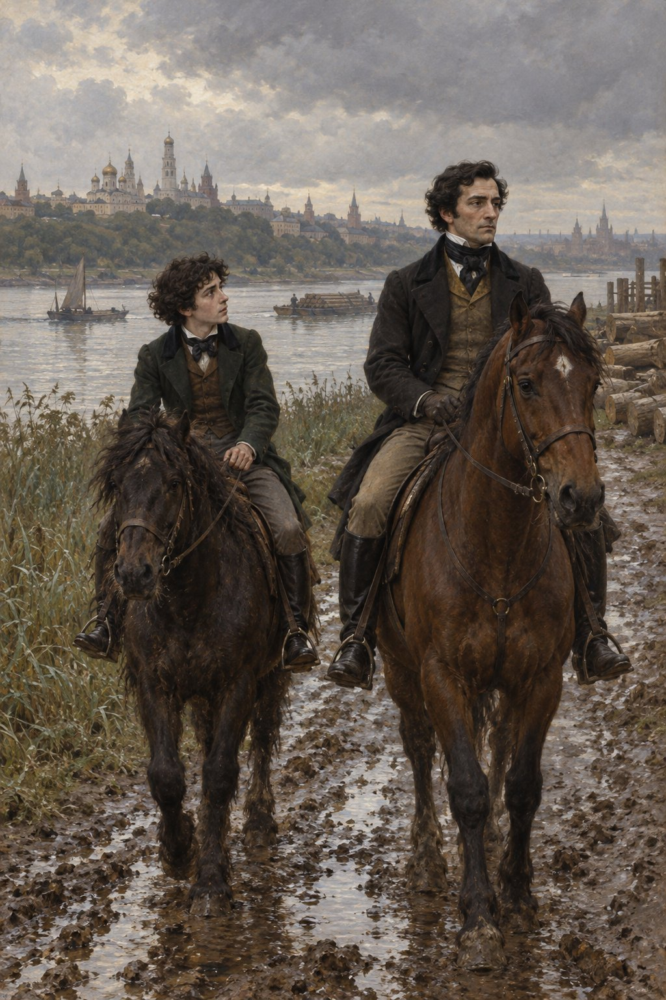
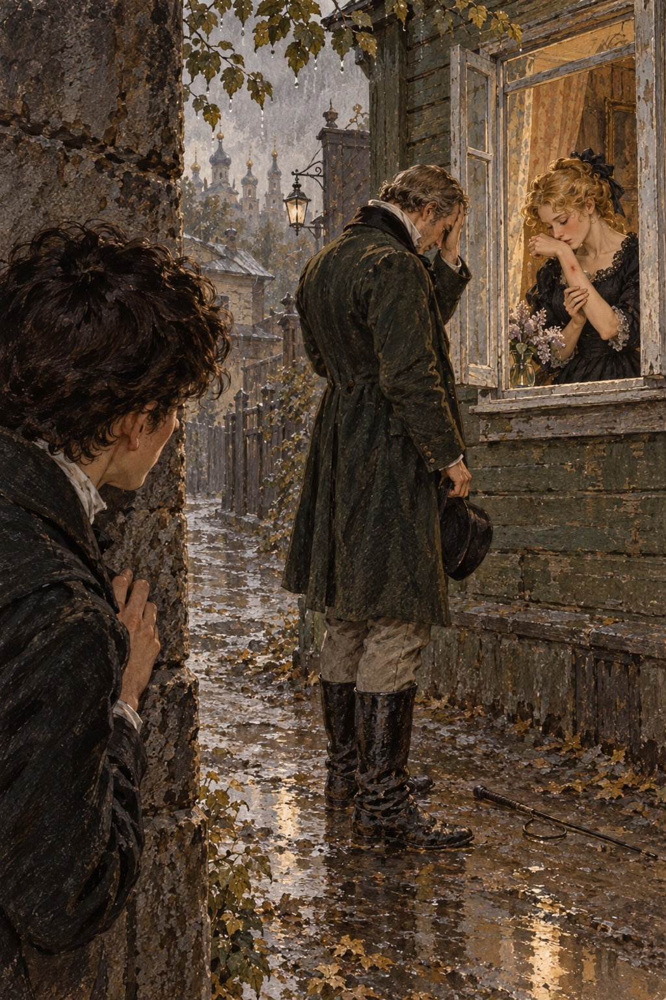

Ivan Turgenev · First Love
제21장
아버지는 매일 말을 타러 나갔다.
그에게는 훌륭한 영국산 말이 있었다.
붉은빛과 흰빛이 섞인 털,
길고 가는 목과 긴 다리.
지칠 줄 모르고 성질도 사나웠다.
이름은 일렉트리크였다.
아버지 말고는
누구도 탈 수 없었다.
어느 날 아버지가
오랜만에 기분 좋은 얼굴로
내 방에 왔다.
막 나갈 참인지
박차도 차고 있었다.
나는 같이 가자고 졸랐다.
“차라리 뛰어넘기 놀이나 하자.”
아버지가 대답했다.
“네 늙은 말로는
나를 못 따라올 텐데.”
“따라갈 수 있어요.
저도 박차를 찰게요.”
“그럼 가자.”
우리는 출발했다.
내 말은 작고 까맣고
털이 북슬북슬했다.
발도 튼튼하고
꽤 날랬다.
일렉트리크가 빠르게 걷기만 해도
내 말은 있는 힘껏 달려야 했다.
그래도 뒤처지지 않았다.
아버지만큼 말을 잘 타는 사람은
본 적이 없었다.
말 위에 앉은 모습이
멋지고 자연스러우면서
솜씨도 좋았다.
말조차 그걸 아는지
아버지를 자랑하며
걷는 것 같았다.
우리는 시내 큰길을 모두 돌고
데비치예 들판에도 갔다.
울타리 몇 개도 뛰어넘었다.
처음에는 겁이 났지만
아버지는 겁내는 사람을
경멸했다.
그래서 나도
두려움을 떨쳤다.
모스크바강을 두 번 건넜다.
나는 이제 집으로 돌아간다고
생각했다.
아버지도 내 말이 지쳤다고
말했기 때문이다.

그런데 갑자기 아버지가
크림 여울목 쪽에서
길을 바꾸더니
강둑을 따라 달렸다.
나도 뒤쫓았다.
낡은 통나무가 높이 쌓인
곳에 이르자
아버지는 일렉트리크에서
재빨리 내려왔다.
나도 내리라고 했다.
자기 말의 고삐를
내게 건네주며
통나무 곁에서
기다리라고 했다.
그리고 좁은 골목으로
걸어 들어가 사라졌다.
나는 말 두 마리를 끌고
강가를 왔다 갔다 했다.
일렉트리크는
걷는 내내 머리를 흔들고
몸을 떨고 콧김을 뿜으며
울어댔다.
멈추면 앞발로 땅을 파거나
내 말의 목을
비명을 지르듯 울며 물었다.
제멋대로 자란
순종 말 그대로였다.
아버지는 돌아오지 않았다.
강에서 불쾌한 습기가
밀려왔다.
가랑비가 조용히 내리기 시작했다.
질리도록 바라본
멍청한 회색 통나무에
작고 검은 얼룩들이 생겼다.
답답했지만
아버지는 오지 않았다.
회색빛 옷을 입은
초소의 관리가 다가왔다.
북쪽 출신인 듯했고
노인 같은 주름진 얼굴이었다.
머리에는 오래된 큰 군모를
항아리처럼 얹고
긴 창도 들었다.
도대체 왜
모스크바강 둑에
초소 관리가 있는지 모를 일이었다.
“도련님,
말 두 마리를 데리고
여기서 뭘 하세요?
제가 잡아 드릴까요?”
나는 대답하지 않았다.
그는 담배를 달라고 했다.
그를 떼어 내고 싶었다.
기다리느라 조바심도 났다.
나는 아버지가 간 쪽으로
몇 걸음 옮겼다.
골목 끝까지 갔다가
모퉁이를 돌자
그대로 멈춰 섰다.
사십 걸음쯤 앞,
나무로 지은 작은 집의
열린 창문 앞에
아버지가 등을 보이고
서 있었다.
가슴을 창틀에 기댔다.
집 안에는 어두운 옷을 입은
여자가 앉아 있었다.
몸의 절반은
커튼에 가려져 있었다.
아버지와 말을 나누는
그 여자는 지나이다였다.
나는 꼼짝도 못 했다.
솔직히 말하면
이런 광경은 예상하지 못했다.
처음에는 도망치려 했다.
‘아버지가 돌아보면
나는 끝장이야.’
그런데 호기심보다,
질투보다,
두려움보다 강한
기묘한 감정이
나를 붙들었다.
나는 그들을 바라보며
말을 들으려고 애썼다.
아버지가 무엇인가를
고집하는 듯했다.
지나이다는 받아들이지 않았다.
지금도 그녀의 얼굴이 보인다.
슬프고 진지하면서도 아름다웠다.
헌신과 슬픔,
사랑과 절망이
말로 할 수 없는 모양으로
얼굴에 함께 어려 있었다.
다른 말로는 설명할 수 없다.
그녀는 짧은 말로만 답하고
눈을 들지 않았다.
그저 웃었다.
고분고분하면서도
끝까지 뜻을 굽히지 않는 웃음이었다.
그 웃음 하나로
나는 예전의 지나이다를
알아보았다.
아버지가 어깨를 움직이고
모자를 바로잡았다.
참을성이 다했을 때
늘 하던 몸짓이었다.
그때 말소리가 들렸다.
“당신은 …와 헤어져야 해.”
지나이다가 몸을 펴고
팔을 내밀었다.
그러자 내 눈앞에서
믿을 수 없는 일이 일어났다.
아버지가 갑자기
손에 든 채찍을 들었다.
아까까지 긴 웃옷 자락의
먼지를 털던 채찍이었다.
팔꿈치까지 드러난
지나이다의 팔에
날카로운 소리가 나며
채찍이 내려앉았다.

나는 비명을
겨우 참았다.
지나이다가 몸을 떨었다.
그녀는 말없이
아버지를 바라보았다.
그리고 팔을 천천히
입술로 가져가
빨갛게 솟은 채찍 자국에
입을 맞추었다.
아버지는 채찍을
옆으로 내던졌다.
현관 계단을 급히 올라
집 안으로 뛰어들었다.
지나이다는 몸을 돌렸다.
두 팔을 뻗고
고개를 뒤로 젖힌 채
창가에서 물러났다.
나는 두려움으로
심장이 멎는 듯했다.
이해할 수 없다는
공포를 안고
골목을 되돌아 뛰었다.
일렉트리크를 놓칠 뻔하며
강가로 돌아왔다.
아무것도 정리할 수 없었다.
차갑고 절제된 아버지도
때때로 무섭게 화를 낸다는 건
알고 있었다.
그래도 방금 본 일을
이해할 수 없었다.
다만 평생을 산다 해도
지나이다의 몸짓과 눈길,
그 웃음은
잊지 못하리라는 걸
바로 알았다.
갑자기 나타난
새로운 지나이다의 모습이
영원히 내 기억에 박혔다.
나는 강을 멍하니 바라보았다.
눈물이 흐르는 줄도 몰랐다.
‘그녀가 맞았어.
채찍으로 맞았어.
맞았어….’
“뭘 하고 있니?
말이나 넘겨 줘.”
뒤에서 아버지 목소리가 들렸다.
나는 기계처럼
고삐를 건넸다.
아버지가 일렉트리크에 올랐다.
추위에 움츠린 말이
앞발을 들고
몇 걸음이나 튀어 올랐다.
곧 아버지가 제압했다.
옆구리에 박차를 대고
목을 주먹으로 쳤다.
“채찍이 없군.”
아버지가 중얼거렸다.
조금 전의 채찍 소리와
내려치는 모습을 떠올리고
나는 몸을 떨었다.
“채찍은 어디에 두셨어요?”
조금 뒤 물었다.
아버지는 답하지 않고
앞으로 달렸다.
나는 뒤쫓았다.
반드시 아버지 얼굴을
보고 싶었다.
“기다리느라 지루했니?”
아버지가 이를 악물고 물었다.
“조금요.
채찍은 어디에 떨어뜨렸어요?”
나는 다시 물었다.
아버지가 재빨리
나를 보았다.
“떨어뜨린 게 아니다.
내가 버렸다.”
아버지는 생각에 잠겨
고개를 숙였다.
그때 나는
처음이자 아마 마지막으로
아버지의 엄한 얼굴에
얼마나 깊은 다정함과
후회가 담길 수 있는지 보았다.
아버지는 다시 달렸고
나는 따라잡지 못했다.
집에 도착한 것은
아버지보다 십오 분 뒤였다.
그날 밤
책상 앞에 앉았다.
교과서와 공책이
다시 책상 위에 나타나기
시작한 때였다.
‘이게 사랑이구나.
이게 열정이야.’
나는 생각했다.
‘아무리 사랑하는 사람의
손이라 해도
채찍을 맞고 어떻게
화를 내지 않을 수 있지?
어떻게 견딜 수 있지?
사랑하면 가능한가 보다.
그런데 나는….
나는 대체 무엇을
상상한 거지?’
마지막 한 달은
나를 훨씬 나이 들게 했다.
그 낯설고 알 수 없는 것 앞에서
내 사랑과 들뜸과 고통은
너무 작고 어린 것으로 보였다.
그것은 나를 두렵게 했다.
어스름 속에서
낯설고 아름다우나
무서운 얼굴을
아무리 보려 해도
뚜렷이 볼 수 없는 것처럼.
그날 밤 기묘하고
무서운 꿈을 꾸었다.
낮고 어두운 방에 들어갔다.
아버지가 채찍을 들고
발을 굴렀다.
지나이다가 구석에
몸을 웅크리고 있었다.
붉은 선은 팔이 아니라
이마에 그어져 있었다.
두 사람 뒤에서
피투성이 벨로브조로프가
몸을 일으켰다.
창백한 입술을 벌리고
아버지를 향해
성난 경고를 했다.
두 달 뒤 나는
대학에 들어갔다.
그로부터 반년 뒤
아버지가 세상을 떠났다.
어머니와 나와 함께
막 이사 간 상트페테르부르크에서
뇌졸중으로 숨졌다.
세상을 떠나기 며칠 전
아버지는 모스크바에서 온
편지 한 통을 받았다.
그 편지가 아버지를
몹시 흔들었다.
아버지는 어머니에게
무엇인가 부탁하러 갔다.
심지어 울기까지 했다고 한다.
내 아버지가!
쓰러진 바로 그날 아침
아버지는 프랑스어로
내게 편지를 쓰기 시작했다.
“아들아,
여자의 사랑을 경계해라.
그 행복을,
그 독을 경계해라….”
아버지가 죽은 뒤
어머니는 모스크바로
적지 않은 돈을 보냈다.